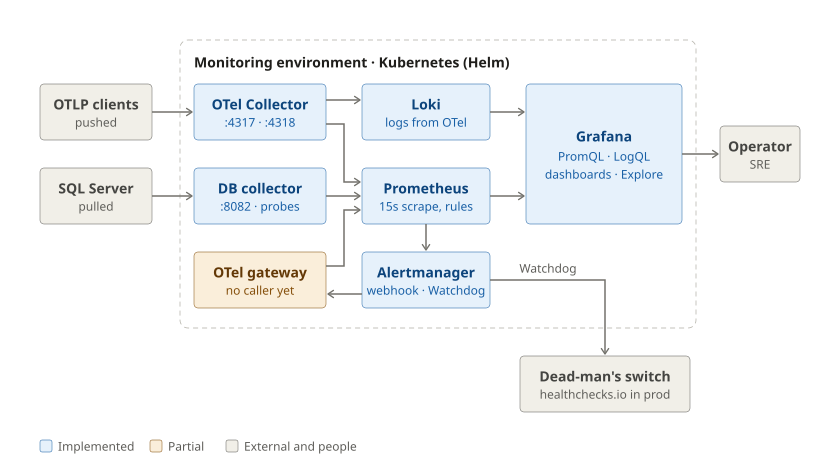
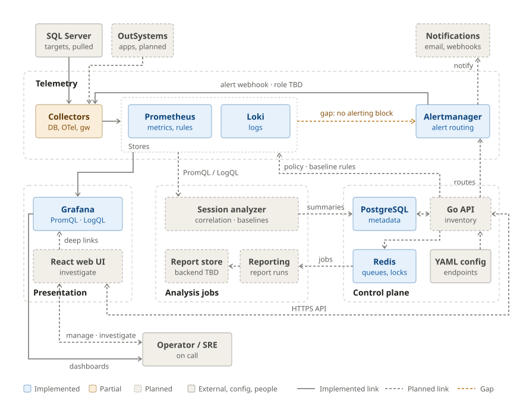

Heartbeat Architecture Overview#
Heartbeat collects telemetry from a separate monitoring environment. SQL Server hosts run no Heartbeat agents. Metrics and logs belong in Prometheus and Loki; PostgreSQL holds the durable metadata used by the planned control plane.
How to read the diagrams#
- Arrows follow the direction data moves. Labels say whether it is pulled (scraped/queried by the receiver) or pushed by the sender.
- Colour encodes status only: blue implemented, amber partial, dashed gray planned or idle. Solid gray boxes are external systems, configuration and people. Dashed outlines group components by environment or plane.
- Solid arrows are implemented or configured connections, not proof of a successful live deployment. Dashed arrows are planned; an amber arrow, where present, marks a known gap in otherwise-implemented components.
- The diagrams are SVG files in
diagrams/. Edit them together with this page when the architecture changes.
Current runtime#
This diagram reflects the checked-in services and the Helm chart
(infra/helm/heartbeat), as deployed on kind and,
with production values, on EKS.

The default integration file has no SQL Server targets. Configure a target using the database onboarding runbook, or use the local development sandbox, to collect database metrics. The SQL metric path has no PostgreSQL dependency, Redis queue, or durable collector-side sample buffer.
Self-scrapes (Prometheus, Loki, Alertmanager) are omitted. OutSystems ingestion is still pending.
Component details#
| Component | Endpoints | Notes |
|---|---|---|
| DB collector | :8082 — /metrics, /healthz, /readyz, /admin/config, POST /admin/config/reload |
Reload also on SIGHUP, and on file change when HEARTBEAT_CONFIG_WATCH_INTERVAL is set. Credentials resolved from HEARTBEAT_CREDENTIAL_*. |
| OTel Collector | OTLP :4317 gRPC / :4318 HTTP; Prometheus export :8889; health :13133 |
Drops user_id, session_id, request_id, client_ip from log attributes. |
| OTel gateway | :8083 — /metrics, /healthz, /readyz, POST /v1/heartbeat/events, POST /v1/heartbeat/alerts |
Events are normalized and returned to the caller, not exported. Alerts are counted, not stored or delivered. |
| Prometheus | :9090 |
15s scrape. Rule files heartbeat.rules.yml and generated/ (currently empty). Sends alerts to Alertmanager. |
| Alertmanager | :9093 |
default webhook receiver pointing at the gateway, send_resolved: true; the always-firing Watchdog alert routes to a deadmans-switch receiver (no integration on kind). |
| Loki / Grafana | :3100 / :3000 |
Grafana provisioned with Prometheus (default) and Loki data sources. |
PostgreSQL and Redis are not deployed until a service uses them (ADR 0003); integration tests use a disposable PostgreSQL fixture.
Target platform#
The target adds operator workflows around the telemetry path. The implemented collectors are collapsed into one node and Prometheus and Loki into one Stores group; see Current runtime for their internals. The dashed groups are the planes described in Core systems. An existing store does not imply that its planned consumers are implemented.

Session analysis owns correlation and baselines; reporting owns report generation. Their queue protocol, scheduling details, artifact backend, and provisioning interfaces still need to be defined. Baseline metadata lives in PostgreSQL; live rule evaluation belongs in Prometheus. Audit JSONL output and optional DB evidence snapshots are omitted from this overview; the collector's current evidence sink does not retain them.
Open questions#
- What does the gateway's alert intake become — persisted investigation events (via the API into PostgreSQL), or removed once Alertmanager delivers notifications directly?
- Should the gateway export normalized events to the OTel Collector, and should it wait for the collector to be ready?
- Who renders the chart's
files/prometheus/rules/generated/— the API (as drawn) or a build step?
Data ownership and boundaries#
| System | Owns | Boundary |
|---|---|---|
| PostgreSQL | Inventory, policy intent, investigation summaries, evidence links, baseline versions, report-run metadata | No raw telemetry, raw sessions, audit streams, or report binaries |
| YAML / Kubernetes | Integration endpoints, Grafana URL templates, collector desired runtime state, credential references | Active collector targets/probes come from config, not PostgreSQL |
| Prometheus | Metric time series and executable recording/alert rules | Metrics are scraped from collectors; no SQL metric buffering in Redis/PostgreSQL |
| Loki | Logs and queryable operational evidence | High-cardinality investigation identifiers belong in payloads rather than index labels |
| Redis | Transient job queues, retries, locks, short-lived caches | Not the durable source of investigation or report state |
| Artifact storage (planned) | Generated report files | PostgreSQL retains the artifact URI only; backend is undecided |
Application-owned workflows derive environment from applications.environment_id.
Remote SQL probes must respect query budgets and least-privilege access. Collector
recovery, replica ownership, fencing, and downstream buffering remain
planned reliability work.
Oracle is a future target; Grafana Alloy is a later comparison, not a selected
replacement in the current architecture.
Implementation references#
The current runtime diagram was checked against the chart and a kind
deployment on 2026-10-03 (make kind-e2e).
- Chart values: Prometheus scrape jobs and alerting, OTel pipelines, Alertmanager routes, Grafana data sources; Heartbeat templates.
- DB collector wiring, probe runner and evidence sink, and gateway HTTP handlers.
- Integration configuration (the chart's
integrationsvalues), operator workflows, data model, and implementation checklist.
Core systems#
Heartbeat is organized into four planes, the same four groups as the target platform diagram.
| Plane | Components | Status | Details |
|---|---|---|---|
| Telemetry | Collection (DB collector, OpenTelemetry Collector, OTel gateway), storage and evaluation (Prometheus, Loki), alert routing (Alertmanager) | Implemented; gateway partial; Prometheus → Alertmanager not connected | Current runtime, database observability, metrics and endpoints |
| Analysis jobs | Session analyzer (correlation, adaptive baselines), reporting, report storage | Planned | Operator workflows |
| Control plane | Go API, PostgreSQL (durable metadata), Redis (queues, locks, retries), YAML/Kubernetes config | Schema and config manager implemented; API planned | Data model, configuration, decisions |
| Presentation | Grafana dashboards, React web UI with Grafana deep links | Grafana implemented; UI planned | Operator workflows |
Architectural guardrails#
Rules every subsystem follows. The reasoning is recorded in the architecture decisions.
- The API never queries SQL Server directly; all database-specific collection
stays in
db-collector. - Redis is never the system of record. Durable job and request state lives in
PostgreSQL (
investigation_jobs,report_runs); workers must be idempotent. - Loki labels stay low-cardinality. User, session, request and IP identifiers go in the log body, never in labels.
- Adaptive alert math is not computed in Grafana dashboards. Services compute and version baselines; executable rules are rendered to Prometheus.
- Custom parsers never bypass the shared telemetry contract in
packages/telemetry-contracts. - There is one ownership path per record: application-owned rows derive their
environment through
applications.environment_id. - Collector desired state comes from YAML/Kubernetes, not PostgreSQL. Runtime state is exposed through metrics, health endpoints and logs.
- The OTel gateway stays thin: stock OpenTelemetry Collector configuration first, custom Go code only for platform-specific parsing.
The repository layout is described in the README.